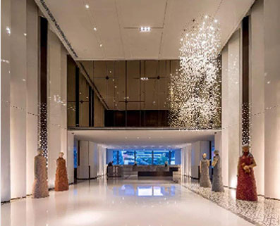
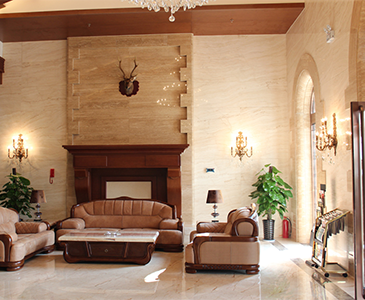
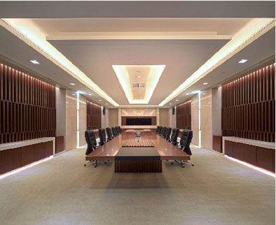

-
对照明质量的全面理解与照明技术的涌现促成了设计观念和手法的革新。 以人为本，个性化的设计——普及照明调控，关怀个人对光的不同需求， 追求个性化的照明风格；注重光色的选择，用光营造情调和氛围， 满足人们心理上和精神上的追求；非均匀照明，动态照明，在需要光的时间， 把适量的光送到需要的地点；照明手法的互补和交叉； 照明手法的应用—彩色灯光、动感照明、刻画重点、隐蔽光源。
-
正确的投光方向与良好的造型立体感密切相关， 我们在从事不同活动，不仅需要不同的照度， 也要考虑照明方式的差异。譬如在夜晚时， 楼体的光线宜来自楼体自身，光线宜层次感， 以突出楼体的立体感。我们就能看到并意识到楼体的模样， 可见，正确的照明设计有助于我们进行相应的视觉活动。
-
照明设计师与建筑师之间的沟通与合作日趋密切， 优秀的照明设计照明概念一定要及早进入建筑方案，融入设计， 使“光”成为设计的有机组成部分， 支持并演现设计的创意，实现用户的期望和要求。